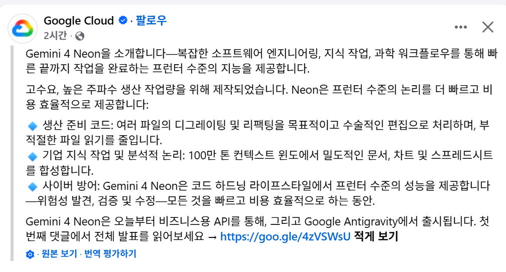
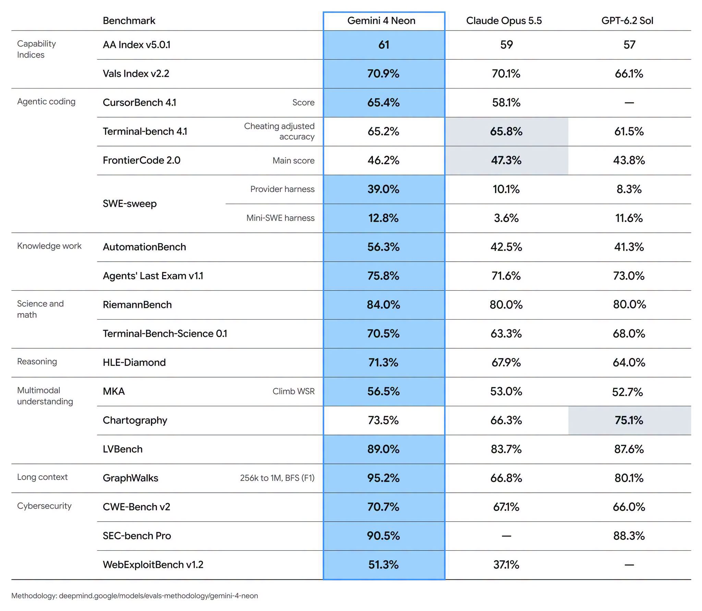

https://blog.google/innovation-and-ai/models-and-research/gemini-models/introducing-gemini-4-neon/
나여 제미니.


https://blog.google/innovation-and-ai/models-and-research/gemini-models/introducing-gemini-4-neon/
나여 제미니.
니온엔비욘~
잼미니 벤치유두딸 언제까지 할라나
Oauth로 다른 하네스에서도 쓸수있게 해라
이혼앤비혼~
안티그라비티에서 네온 high써봤는데 성능 많이 좋네
토큰은 꽤 먹는 느낌인데 내 개떡같은 설명을 찰떡같이 알아먹네
어제였나? gpt6.2는 개떡같은 설명이었다지만 개떡처럼 받아치길래 내가 gpt가 뭔 소리하는건지 모르겠네 상황이었는데
애당초 개발자도 아니고 개인용 코딩 장난감들 만드는데 쓰는 내 기준으로는 gpt 6.2보다 사용감 좋음
친구 클로드 쓰는거 보니까 눈 앞에서 이미지 자료 만들어주고 텍스트박스 누르니까 수정도 가능하고 막 그러던데 그런건 어떻게 하는거임?? 제미나이 task나 챗지피티 work랑은 다른거임??
난 구글제품은 절대 거들떠도 안봄
세상에 AI기업이 다 망하고 구글만 남는다해도 나는 차라리 맥스튜디오를 사서 로컬모델을 돌릴것